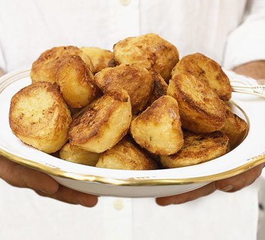

Perfect Roast Potatoes

Foolproof Recipe for Perfect Roasties Every Time!
These roasted potatoes are crispy on the outside, bursting with flavour on the inside and they provide that wonderful contrast between crunchy and creamy. Unbeatable.
Ingredients
- 16 Potatoes (King Edward, Desiree or Maris Piper recommended.)
- 2 Tablespoons Plain Flour
- 140g Goose fat
Steps
- Pre-heat the oven to 190c/170c Fan/Gas 5. Peel potatoes and cut in half, or if very large, into quarters. Place roasting tray into oven with fat.
- Place into a saucepan with cold water and bring to the boil. Boil for two minutes, then drain. Toss in colander to fluff potato surface, sprinkling flour over them as you do so.
- Remove roasting tray from oven and gently, place potatoes into tray. Coat the potatoes in the fat, then put in the oven for 20 minutes.
- After 20 minutes, turn the potatoes over and return them to the oven for another 20 minutes.
- Remove roast potatoes from oven, allow them to drain, then serve.